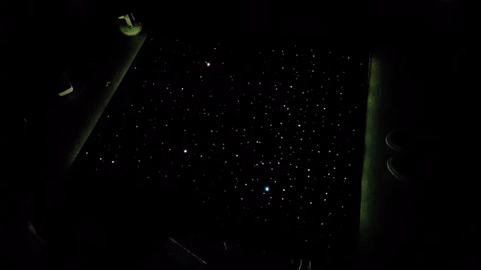
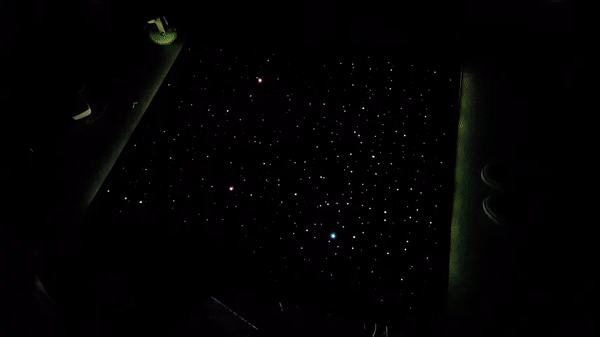

Think Inside The Box Space Themed, Cube Runner Inspired, Immersive Gaming Environment
The Project
For this Principles of Engineering course at Olin College, our team, Think Inside the Box, has designed and fabricated an interactive cube-runner inspired game. The player begins by stationing themselves into a chair embedded with tilt sensors. This chair is stationed inside and responsive cube integrated with LED “stars” which react to the user’s tilting. The player must navigate through holes in approaching walls by tilting in the tipper chair to the left or to the right as they accelerate through space.
The goal of the project was to create a highly interactive, person-scale gaming environment with a substantial software and hardware component. Our team of four was given just over seven weeks to design, develop, and execute our idea and create a fully integrated interactive game. The total cost of our finished product was $247.13 just under the $250 budget. Our project was immortalized in website format with in-depth documentation on the development of mechanical, electrical, and software subsystems.
The Game
The premise of our game is a young space explorer who's adventure is put on pause when their mother calls asking for assistance with the wifi at home. Before being able to continue their adventure, our hero must take on the task of navigating through space and return to their home planet. However, they must navigate their space ship through the many asteroid belts between their current position and their home planet.
Our game begins with the player entering a darkened cube made of wooden panels and lightproof fabric and sitting down in a sideways rocking chair embedded with tilt sensors. After the player hits the start button activating the hidden Arduino microcontroller, the wooden panel the player faces lights up with columns of "asteroids." In order to avoid crashing into the asteroid belts, the player must tilt towards a gap in the belt using the rocking chair. As the player tilts, the gap will appear to move left and right. The gap will also appear larger as the player approaches it. After passing through the gap, the player advances to the next level and must continue navigating through the gaps to continue home. As they progress, the ship moves faster and faster making the game more difficult as there is less time to navigate towards the gap. Should the player not make it through the gap, the wall will blink red to show that the player has died followed by the player's score indicated by the number of columns that reappear before the player in a waving rainbow color.
System
This interaction between the player and the environment is enabled by a LED matrix and a gyroscope communicating though an Arduino. A small wooden rocking chair houses a gyroscope that is wired to the Arduino providing the game with the player's tilt position. This information then updates the player's position in the virtual world's matrix which is reflected by the 16 x 8 LED matrix in front of the player. As we were limited with I/O pins on the Arduino, an analog circuit was added between the Arduino and the LED matrix to enable bit shifting for contorl of a higher resolution RGB LED matrix. Power was routed through the Arduino from a wall outlet to both the LED matrix and the gyroscope.
In order to allow for the disired immersive effect, we focused on the main interaction of the player and the environment noting that anything short of that would appear very lack luster. This, the scale of the project, and the limited resources reduced the number of features in the game.
The mechanical components of the system were the three paneled walls of the box and the chair that is placed inside the box. The box that envelopes the player is comprised of three hallow walls and a convertable-style fabric that encloses the top and back of the box using magnets.
The walls of the box were made using 2 sheets of thin wood panels fitted into slots routed into 2"x3" wood beams composing the frame. This allowed for a hallow space inside each wall in which the LEDs would be inserted. The outer panels would have the LED matrices mounted while the inner panels would have holes of various diameters drilled into them in a random pattern to give the effect of outter space. The sides panels facing towards each other in each wall would also be painted white to assist in the diffusion of light. This panel design would also enable us to swap out panels should we choose and provide us access to the electronics within. Holes were drilled through the frame for wiring to the arduino.
The chair was made of wooden dowls hand sawed and screwed into two CNC wood routed arches. FEA was conducted to ensure proper geometry that would safely allow for a players weight to push against the handles while seating and tilt without causing major strain on the arches. Wooden slats were added for comfort.
The electrical components of the system include a gyroscope, analog circuit, Arduino, and 16 x 8 RGB LED matrix. We used the InvenSense MPU-6050 but since our game only reguired information about 1 axis, we were only interested in pitch. There are three wires from the Arduino to the IMU, the first is from INT to digital on the Arduino which parses data, and two from SCL and SDA to analog input on the Arduino which carries the measured rotation and acceleration.
Although each RGB was individually addressable, we decided to link 8 LEDs into each of the 16 individually addressable LED columns along the front wall. This reduced the amount of wiring needed while sufficiently creating the type of 1 axis game play we aimed for. The R, G, B, and power pins of each LED column were then attached to the control pins of the 75HC595 shift registers.
 
Demonstrations
The finished project was robust enough to be presented at Olin College's end of the semester Exhibition during which guests to the school were able to enter our gaming environment and play the game. Demonstrations lasted more than an hour of nearly continuous use without any technical difficulties.